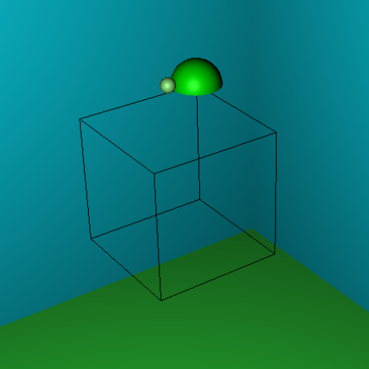
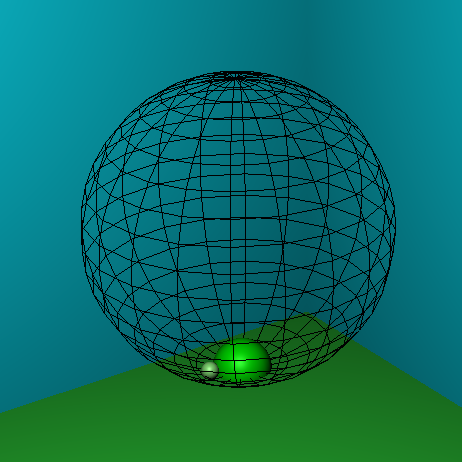
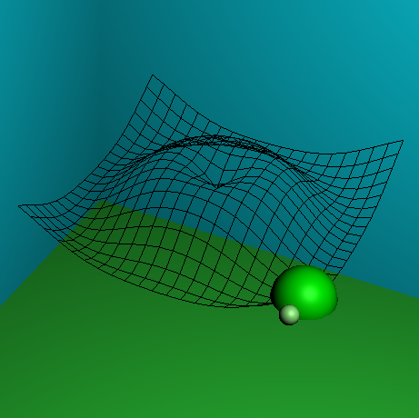
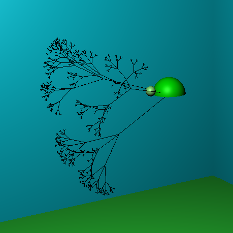

Last edited 13dec2015 by nwalter2@illinois.edu
3D Turtle Graphics
By Nathan Walters
LAUNCH RTICA




Abstract
My project is a 3D turtle graphics application implemented using JavaScript and HTML5. It works very similarly to a standard 2D turtle system, with the logical extension that the turtle will be able to move along a third dimension. It also allows the user to move the camera so as to be able to view the turtle's drawings from different perspectives. More information about my project can be seen in my project proposal.
RTICA
You can read about my finished RTICA in the project documentation. It is implementated as a single-page web application with HTML, JavaScript, and the three.js graphics library. Users have two ways to enter commands.
- The first is a "terminal"-like interface (REPL), where you can enter one line at a time.
- The second allows you to type multiple lines of code at a time and then execute them all at once; this is ideal for scripting complex turtle behavior. All commands are entered as JavaScript code, which is then parsed and executed with JavaScript's eval(...) function.
Commands
The turtle supports the following commands:
- move(distance): move forward/backwards
- goto(x, y, x): jump immediately to the location (x, y, z) without changing the turtle's orientation
- turn(degrees): turns right/left by the specified angle
- pitch(degrees): pitches up/down by the specifies angle
- roll(degrees): rolls clockwise/counterclockwise by the specified angle
- penup(): prevents the turtle from making lines as it moves until a call to penup()
- pendown(): makes the turtle draw lines as it moves
- replay(): replays the turtle's commands
- status(): prints out the turtle's position and orientation vectors
- reset(): clears the turtle's path, resets its heading to the default, and positions the turtle at the origin
- hide(): hides the turtle
- show(): shows the turtle
- setMoveSpeed(speed): sets the speed at which the turtle moves, in units/sec
- setTurnSpeed(speed): sets the speed at which the turtle turns, in radians/sec
Examples
The following code snippets demonstrate some interesting things that can be done with the turtle. More scripts can be found in this folder. Most of these programs should be copy-pasted into the "Text Input" tab on the RTICA; the example below labeled "direct commands" should be entered line-by-line into the "Terminal" tab.
Draws a wireframe cube (direct commands)
Draws a wireframe cube (scripting)
Draws a wireframe sphere (scripting)